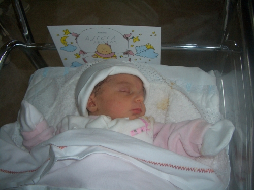

El pasado lunes, 28 de Septiembre, nació mi nueva Padawan Alicia 😀 La fuerza es intensa en ella. Dentro de un tiempo los juegos con los robots modulares serán más divertidos, ya que estarán mis dos Padawans en acción.
Tanto la madre como la niña están muy bien.
Muchas Felicidades!!!
Aunque mira que ponerle el nombre de un robot a tu niña… ( http://asl.epfl.ch/research/systems/Alice/alice.php )
Ahora en serio… muchas felicidades y salud para los 4 (padres e hijos).
S2
Ranganok Schahzaman
Enhorabuena!
Qué velocidad de fabricaciñon! A este paso te veo con el equipo de baloncesto (o de robocup) dentro de poco.
Muchas felicidades y a ti mujer
Un saludo,
Rafa.
Enhorabuena
Poco a poco vas teniendo tu ejército de clones para dominar la galaxia 😉
Ranganok: Muchas gracias. jajajaj Sí, es verdad. Tiene nombre de verdad.
Rafa: Gracias! Cuento tiempo!!
Muttley: Gracias!! De momento nos plantamos con 2, pero no es mala idea lo de los clones 😀
Enhorabuena! Cuántas novedades!
Enhorabuena! 😉
Enhorabuena!! Desde que tienes la Reprap no veas cómo produces xD
Enhorabuena!!!
Qué bien os lo vais a pasar con esos dos robots humanoides que habéis “hecho”!!!!
Os lo digo por experiencia.
Saludos,
Isaac
Enhorabuena Juan, ya tienes la parejita, jeje
De aqui en adelante ponte una electrovalvula ya sabes donde , jajajaja
Un abrazo
Francisco Balbuena